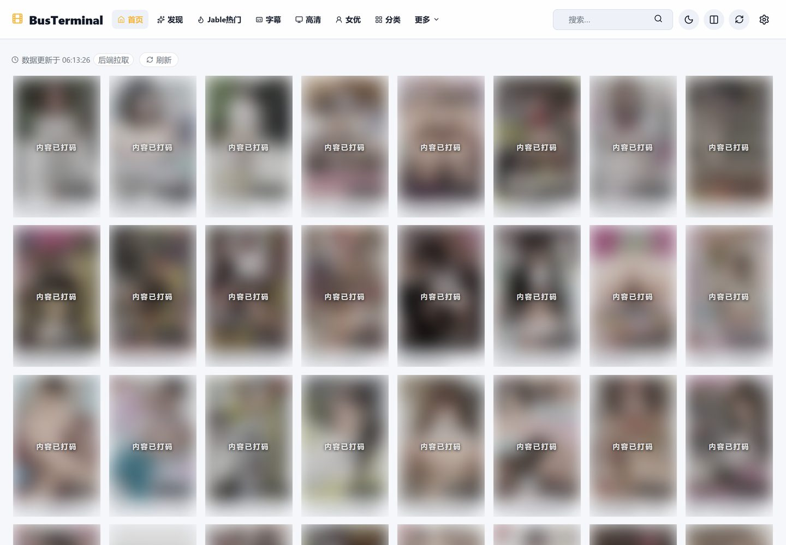
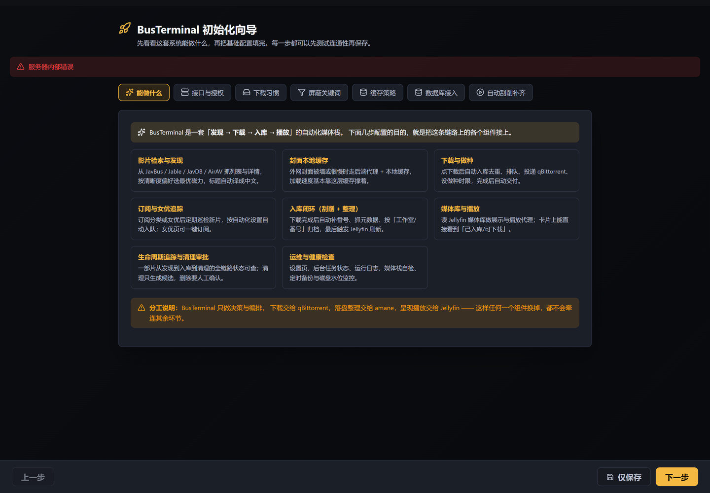
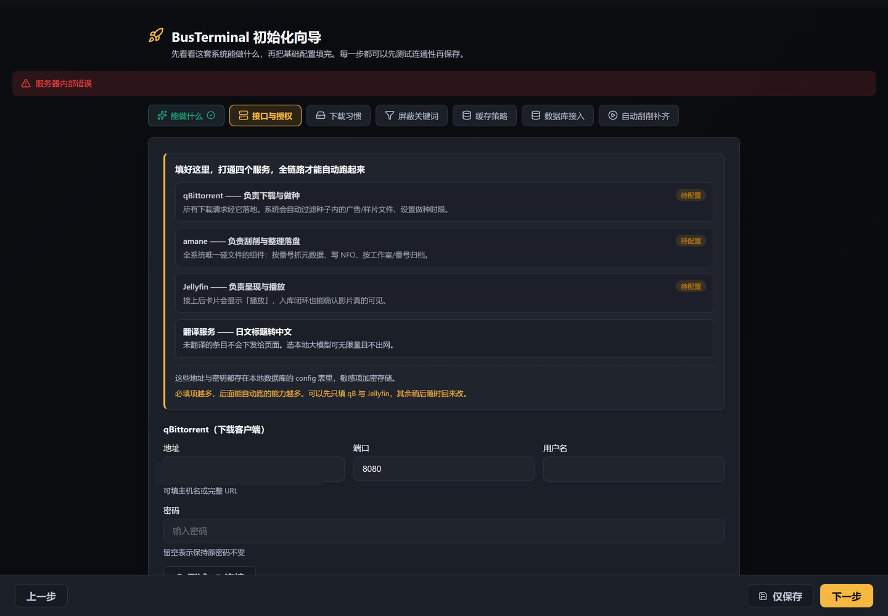
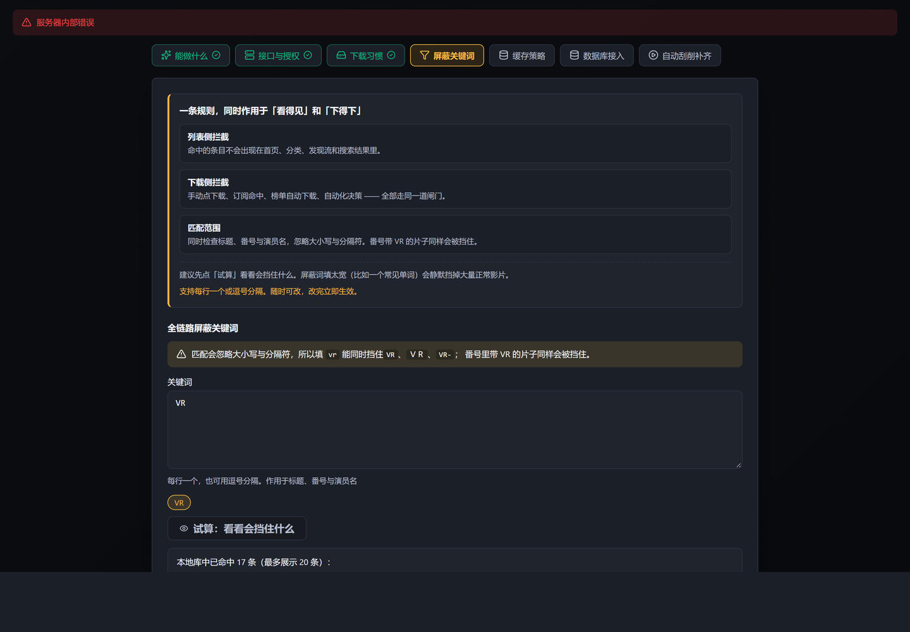

多源发现与元数据
多来源统一检索、按番号聚合；详情与封面落库缓存，翻库不再逐条回源。
01 / 界面




02 / 链路
每一段都记录谁发起、进行到哪、成功还是失败。哪一环断了，一眼看得出来。
03 / 能做什么
多来源统一检索、按番号聚合；详情与封面落库缓存，翻库不再逐条回源。
本地大模型批量翻译，带质量闸：不合格的译文不落库，宁可没有中文。
指挥 qBittorrent 执行并归类；做种达标后自动投放，不必盯着进度条。
投递 → 整理 → 刷库，每一步都回写状态，卡在哪一环直接可见。
本地文件清单、删除保护、滞留检测，堵住“下完没入库”的黑洞。
首次引导向导、可开关的鉴权、库内敏感配置加密存储。
04 / 怎么跑
官方镜像已发布在 GHCR，不用 clone 源码，也不用自己构建。
默认 SQLite，不需要额外容器。开 8012 端口就进引导向导。
docker run -d \
--name bus_terminal \
-p 8012:8000 \
-v "$PWD/busterminal-data:/app/data" \
ghcr.io/seldoms/busterminal:latest路径与端口全部可配，可选带上 PostgreSQL。适合长期运行。
git clone https://github.com/seldoms/BusTerminal.git
cd BusTerminal
cp .env.install.example .env
vi .env # port & db password
docker compose -f docker-compose.install.yml up -d连数据库、下载器、刮削工具、媒体服务器一起装。每个服务挂一个 profile，装哪些由你决定。
cp .env.fullstack.example .env
COMPOSE_PROFILES=db,qb,amane,jellyfin \
docker compose -f docker-compose.fullstack.yml up -ddocs/AGENT_FULLSTACK_INSTALL.md 整段交给你的 AI agent：它先探查本机，
把服务清单摊给你逐项选，你确认之后才动手安装。已经装好的服务只复用、不重装。
05 / 边界
每个环节交给最合适的组件，它只负责决策、下发与记账。
| 环节 | 由谁负责 |
|---|---|
| 下载执行 | 你已有的下载器（qBittorrent 等） |
| 命名、整理、生成 NFO | 你已有的刮削工具 |
| 媒体库扫描与播放 | 你已有的媒体服务器（Jellyfin 等） |
| 发现、决策、状态与重试 | BusTerminal |